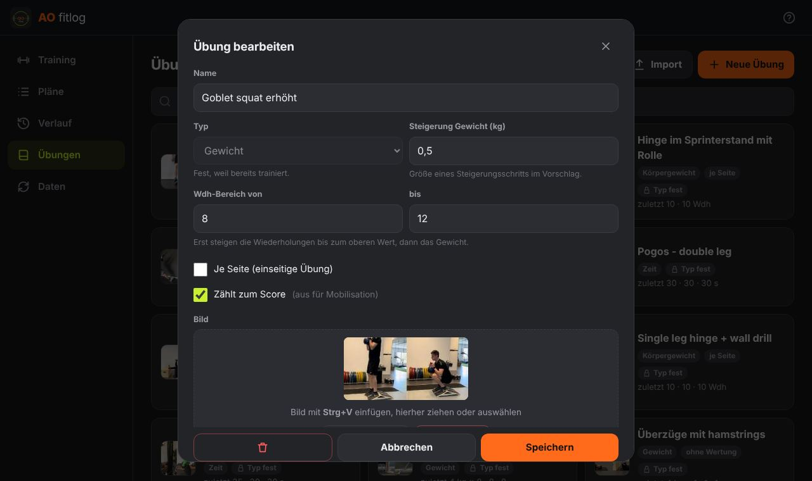
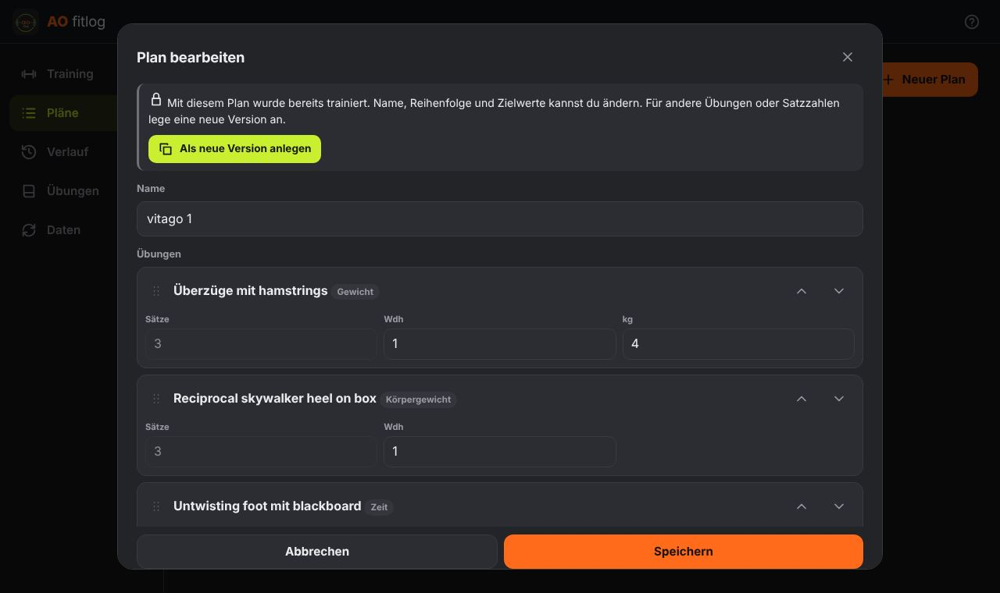
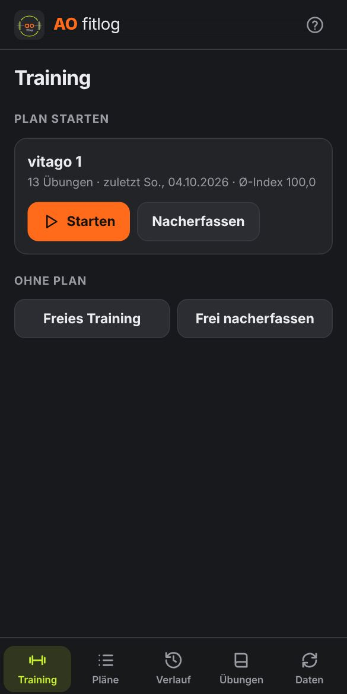
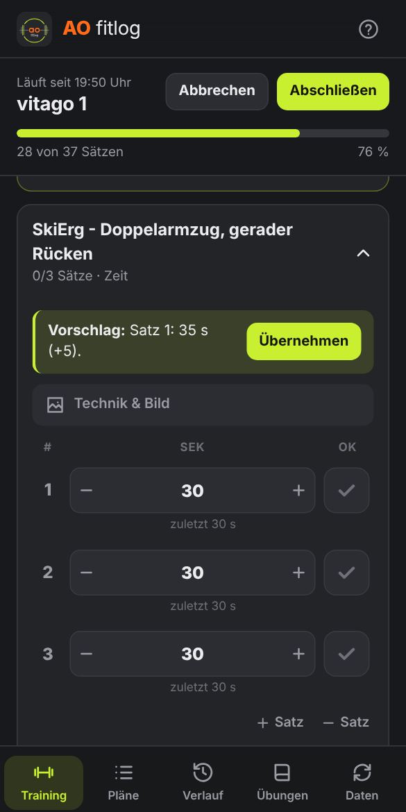
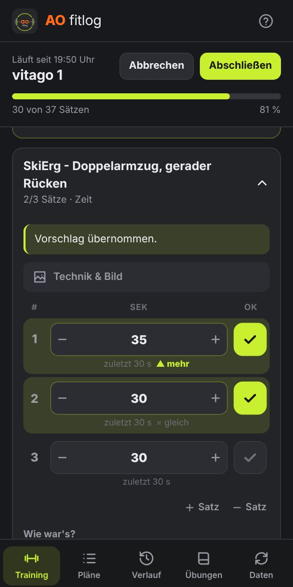
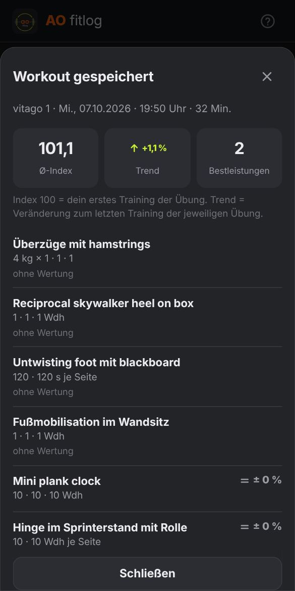
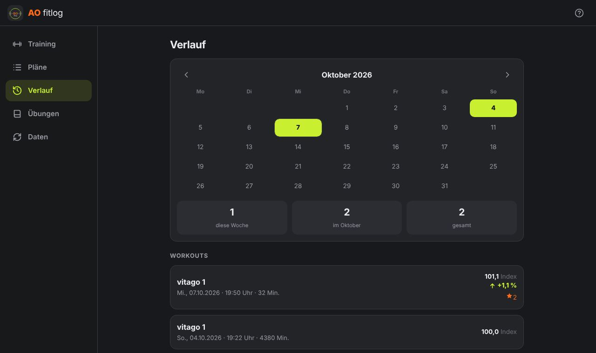
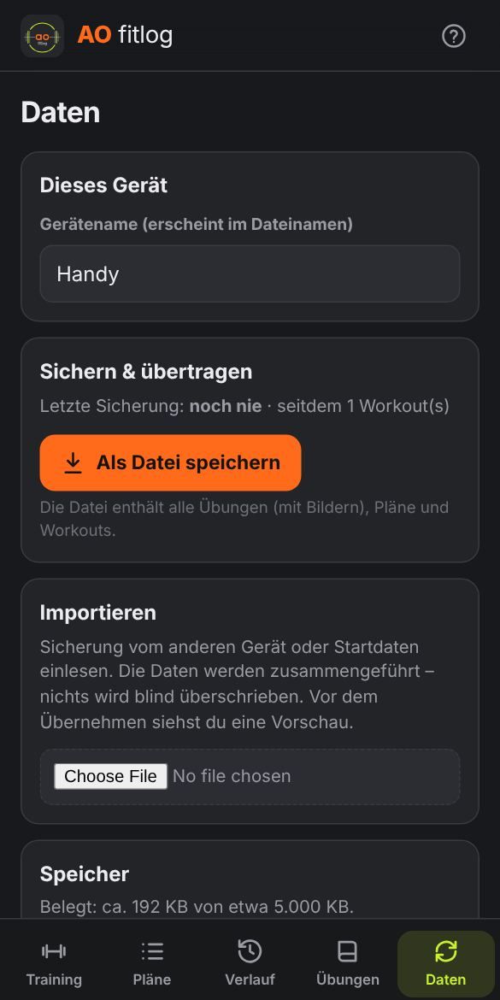

Trainingstagebuch für stetige Steigerung in kleinen Schritten · Version 1.0
AO fitlog läuft im Browser und wird wie eine App installiert. Es gibt keinen Server und kein Konto: Alle Daten liegen nur auf dem jeweiligen Gerät.
| Gerät | Aufgabe |
|---|---|
| PC | Übungen anlegen, Pläne zusammenstellen, Verlauf ansehen |
| Handy | Training im Studio erfassen |
Beide Geräte gleichen sich über eine Sicherungsdatei ab (Kapitel 10). Die App funktioniert ohne Internet.
ao-fitlog › Public › Create repository.icons und anleitung-bilder) › Commit changes.main, Ordner / (root) › Save.https://BENUTZERNAME.github.io/ao-fitlog/.Adresse in Chrome oder Edge öffnen. Optional über das Installieren-Symbol in der Adresszeile als App einrichten.
PC, Handy). Er erscheint im Namen der Sicherungsdateien.AO_fitlog_Startdaten.json wählen › Vorschau prüfen › Übernehmen. Sie enthält die bisherigen Übungen mit Bildern und den Plan „vitago 1“, ohne Historie.| Begriff | Bedeutung |
|---|---|
| Übung | Eintrag in der Übungsliste mit Name, Typ, Bild, Technik und Einstellungen. |
| Typ | Gewicht (kg × Wiederholungen), Körpergewicht (nur Wiederholungen) oder Zeit (Sekunden). |
| Plan | Feste Abfolge von Übungen mit Satzzahl und Zielwerten. |
| Workout | Ein durchgeführtes Training. Es wird im Verlauf gespeichert. |
| Satz | Eine Zeile im Training. Er zählt erst, wenn er abgehakt ist. |
| Je Seite | Einseitige Übung. Die Werte gelten pro Seite. |
| Ohne Wertung | Übung zählt nicht zum Score, z. B. Mobilisation. Sie wird trotzdem protokolliert. |
| Index | Leistung im Vergleich zum ersten Training der Übung (= 100). |
| Trend | Veränderung in Prozent gegenüber dem letzten Training der Übung. |
| Vorschlag | Empfohlener kleiner Steigerungsschritt fürs heutige Training. |
Übungen › + Neue Übung. Zum Bearbeiten eine Übung in der Liste anklicken.

| Feld | Bedeutung |
|---|---|
| Name | Pflicht. Jeder Name darf nur einmal vorkommen. |
| Typ | Gewicht, Körpergewicht oder Zeit. Nach dem ersten Training fest, damit die Auswertung stimmt. |
| Steigerung | Größe eines Vorschlagsschritts. Standard: 0,5 kg · 1 Wdh · 5 s. Bei Kurzhanteln mit festen Stufen (z. B. 12 → 14 kg) hier 2 eintragen. |
| Wdh-Bereich von / bis | Nur Typ Gewicht. Standard 8 bis 12. Siehe Kapitel 8. |
| Je Seite | Für einseitige Übungen anhaken. |
| Zählt zum Score | Für Mobilisation und Technikübungen abhaken. Dann gibt es auch keinen Steigerungsvorschlag. |
| Bild | Strg+V fügt ein kopiertes Bild ein (z. B. Screenshot aus Greenshot). Alternativ: Datei hineinziehen oder Datei wählen. Bilder werden automatisch verkleinert. |
| Beschreibung / Technik | Im Training unter „Technik & Bild“ aufklappbar. |
| Kommentar / Einstellung | Im Training immer sichtbar, z. B. „Sitzhöhe 3“. |
| Link | Optional, z. B. Video. Muss mit https:// beginnen. |
Löschen: Papierkorb im Bearbeiten-Fenster. Das geht nur, wenn die Übung in keinem Plan steht. Danach erscheint einige Sekunden lang Rückgängig.
Neue Übungen lassen sich in einer Excel-Liste sammeln und gesammelt einlesen.
AO_fitlog_Uebungen_Vorlage.xlsx öffnen. Im Blatt „Übungen“ eine Zeile pro Übung ausfüllen. Das Blatt „Erklärung“ beschreibt jede Spalte.| Spalte „Bild“ | Ergebnis |
|---|---|
Dateiname, z. B. goblet.jpg | Genau diese Datei wird verwendet. |
| leer | Es wird eine Datei gesucht, die genauso heißt wie die Übung (z. B. Goblet Squat.jpg). Gibt es keine, bleibt die Übung ohne Bild. |
Sobald mit einem Plan trainiert wurde, ist seine Struktur gesperrt. So bleiben alle Workouts eines Plans vergleichbar.
| Weiter änderbar | Gesperrt |
|---|---|
| Name, Reihenfolge, Zielwerte | Übungen hinzufügen/entfernen, Satzzahl |
Für strukturelle Änderungen: Plan bearbeiten › Als neue Version anlegen. Die App legt eine Kopie an (z. B. „vitago 1 V2“) und verschiebt die alte Version ins Archiv. Archivierte Pläne erscheinen nicht mehr beim Trainingsstart, ihre Workouts bleiben erhalten. Über Archiv › Wiederherstellen lassen sie sich zurückholen.

Kopieren erstellt eine ungesperrte Kopie, ohne das Original zu archivieren. Löschen gibt es nur für Pläne ohne Workouts, sonst Archivieren.



Training › beim gewünschten Plan Starten. Das Display bleibt während des Trainings an.
| Element | Funktion |
|---|---|
| − + | Gewicht ±0,5 kg · Wiederholungen ±1 · Zeit ± Steigerungsschritt (Standard 5 s). Werte lassen sich auch antippen und eintippen (Komma erlaubt). |
| ✓ | Satz erledigt. Nur abgehakte Sätze zählen. Nochmal tippen hebt das Abhaken auf. |
| „zuletzt …“ | Wert vom letzten Training. Nach dem Abhaken: ▲ mehr, = gleich oder ▼ weniger. |
| Vorschlag › Übernehmen | Setzt den empfohlenen kleinen Steigerungsschritt. Ignorieren ist jederzeit möglich. |
| Orange Notiz | Deine Notiz vom letzten Training dieser Übung. |
| Grauer Kasten | Kommentar/Einstellung der Übung, z. B. Sitzhöhe. |
| Technik & Bild | Aufklappen für Beschreibung, Bild und Link. Bild antippen vergrößert es. |
| + Satz / − Satz | Satz für heute ergänzen oder entfernen. Der Plan bleibt unverändert. |
| Wie war's? | leicht · passt · schwer (optional). „Schwer“ verhindert beim nächsten Mal einen Steigerungsvorschlag. |
| Notiz fürs nächste Mal | Erscheint beim nächsten Training dieser Übung, z. B. „Gerät belegt“. |
| Überspringen | Übung heute auslassen. Sie wird nicht als Rückschritt gewertet. |
| + Übung hinzufügen | Weitere Übung für heute aus der Liste ergänzen. |
Fokus: Aufgeklappt ist nur die aktuelle Übung. Ist sie vollständig abgehakt, klappt sie zu und die nächste öffnet sich. Jede Übung lässt sich per Tipp auf den Titel auf- und zuklappen.
Grundsatz: Pro Übung und Training höchstens ein kleiner Schritt, und nur in einem Satz. Es wird immer der schwächste Satz angehoben.
| Typ | Vorschlag | Beispiel |
|---|---|---|
| Zeit | Ein Satz + Schritt (Standard 5 s) | 30/30/30 → 35/30/30 → 35/35/30 |
| Körpergewicht | Ein Satz +1 Wdh | 10/10/10 → 11/10/10 |
| Gewicht | Ein Satz +1 Wdh, bis alle Sätze das obere Ende des Bereichs erreichen. Dann Gewicht + Schritt (Standard 0,5 kg), Wdh zurück auf das untere Ende. | 12 kg × 12/12/12 → 12,5 kg × 8/8/8 |
Kein Vorschlag, Werte halten, wenn beim letzten Mal nicht alle Sätze abgehakt wurden oder die Übung als „schwer“ markiert war. Übungen „ohne Wertung“ bekommen keine Vorschläge.

| Typ | Wert pro Satz |
|---|---|
| Gewicht | kg × (1 + Wdh ÷ 30) „Belastungswert“: belohnt mehr Gewicht auch bei weniger Wdh |
| Körpergewicht | Wiederholungen |
| Zeit | Sekunden |
Leistung = Summe der abgehakten Sätze ÷ Anzahl der Sätze. Ein ausgelassener Satz senkt die Leistung, eine andere Satzzahl verzerrt sie nicht.
| Kennzahl | Bedeutung |
|---|---|
| Ø-Index | Durchschnitt aller gewerteten Übungen. 100 = Niveau beim ersten Training der jeweiligen Übung. 104,3 = im Schnitt 4,3 % besser als am Anfang. |
| Trend | Durchschnittliche Veränderung zum letzten Training jeder Übung (planübergreifend). Grün ▲ = gesteigert, Rot ▼ = weniger. |
| Bestleistung ★ | Leistung höher als in allen bisherigen Trainings dieser Übung. |
| Basis | Erstes Training einer Übung. Es gibt noch keinen Vergleich. |
Beispiel SkiErg (3 Sätze): 30/30/30 s ergibt 30. Mit 35/30/30 s ergibt sich 31,67, also +5,6 %.
Verlauf: Kalender (grün = Trainingstag), Anzahl pro Woche und Monat, Liste aller Workouts. Ein Tipp öffnet die Details. Dort lässt sich ein Workout auch löschen (mit Rückgängig).


Beim Teilen heißt die Datei ….txt (Android erlaubt keine .json-Dateien zum Teilen), beim Speichern ….json. Beide lassen sich importieren. Der Name enthält Gerät, Datum und Uhrzeit, z. B. AO_fitlog_Handy_2026-10-07_19-45.txt.
Nach 3 Workouts ohne Sicherung erscheint auf der Trainingsseite ein Hinweis mit Jetzt sichern, und Daten trägt einen orangen Punkt.
Liegt auf GitHub eine neue Version, zeigt die App oben „Neue Version verfügbar“. Neu laden aktiviert sie. Ein laufendes Workout bleibt dabei erhalten.
Für den Betreiber: Neue Dateien auf GitHub hochladen (vorhandene ersetzen). Die Geräte erkennen ein Update an der Versionsnummer in sw.js (Zeile const VERSION). Sie muss bei jeder Änderung erhöht werden.
| Problem | Lösung |
|---|---|
| „Keine AO-fitlog-Datei“ beim Import | Die Datei stammt aus einer anderen App (z. B. „AO Trainiert“). Nur Sicherungen von AO fitlog oder die Startdaten-Datei verwenden. |
| „Speicher voll“ | Daten sichern, große Bilder entfernen oder durch kleinere ersetzen. Belegung unter Daten › Speicher (ca. 5.000 KB verfügbar). |
| Typ einer Übung nicht änderbar | Die Übung wurde bereits trainiert. Neue Übung mit anderem Namen anlegen. |
| Übung im Plan nicht entfernbar | Der Plan ist gesperrt. Als neue Version anlegen verwenden (Kapitel 6). |
| Übung lässt sich nicht löschen | Sie steht in einem Plan, auch archivierte Pläne zählen. |
| Kein Vorschlag angezeigt | Erstes Training der Übung, Übung „ohne Wertung“, oder es gilt „Werte halten“ (Kapitel 8). |
| „Teilen …“ fehlt | Das Gerät unterstützt kein Teilen von Dateien. Als Datei speichern verwenden. |
| CSV-Import: Umlaute falsch | In Excel als CSV UTF-8 speichern, nicht als einfaches „CSV“. |
| Versehentlich gelöscht | Sofort Rückgängig in der Meldung unten tippen (7 Sekunden). Danach hilft nur der Import einer älteren Sicherung. |
| App zeigt alte Version | App schließen und neu öffnen. Bei „Neue Version verfügbar“ Neu laden tippen. |
AO fitlog 1.0 · Diese Anleitung ist in der App jederzeit über das ? oben rechts erreichbar.